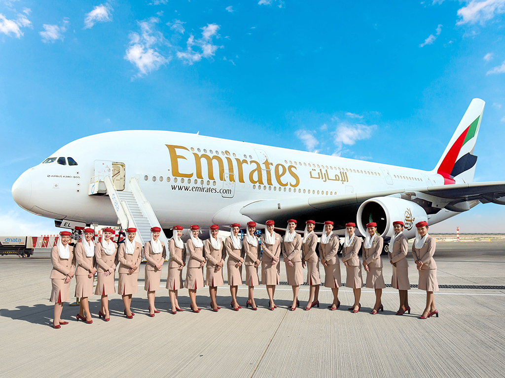
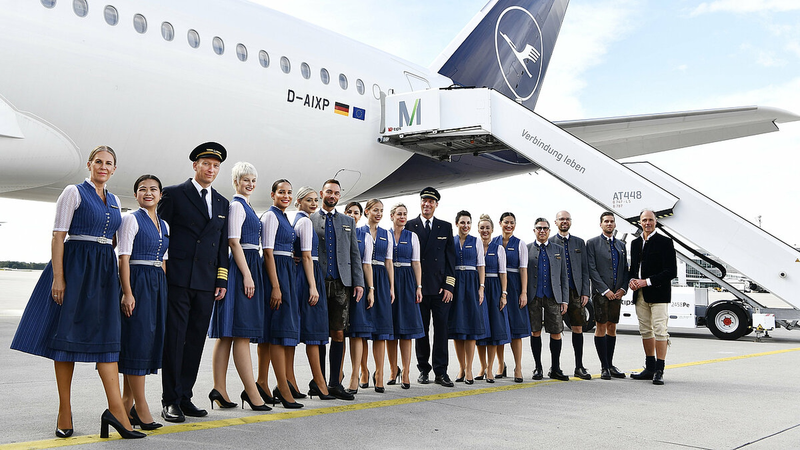
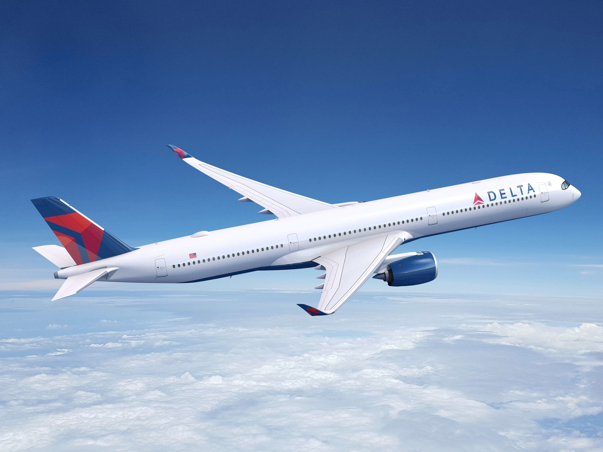
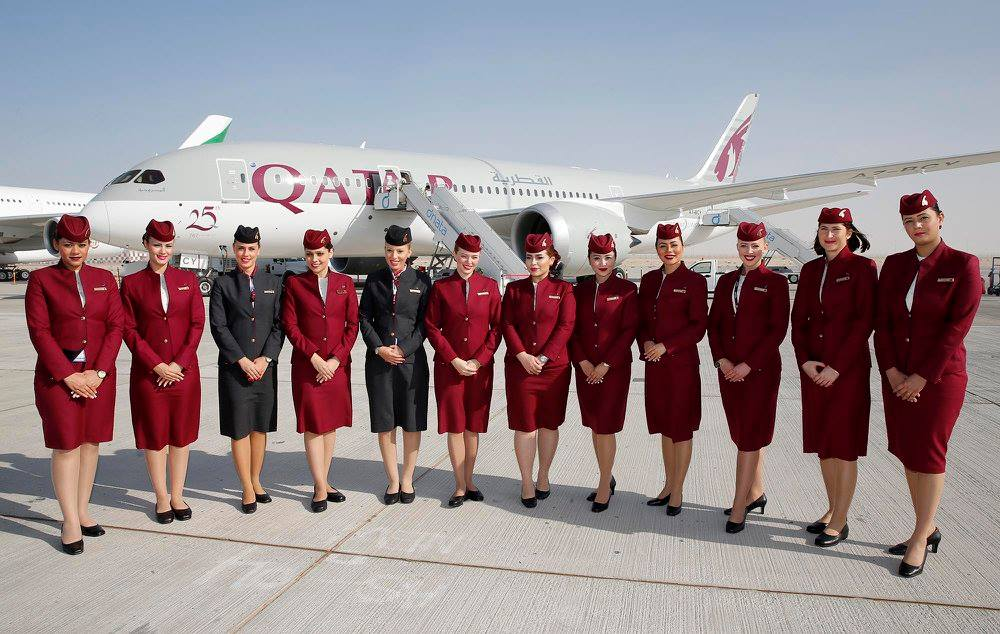
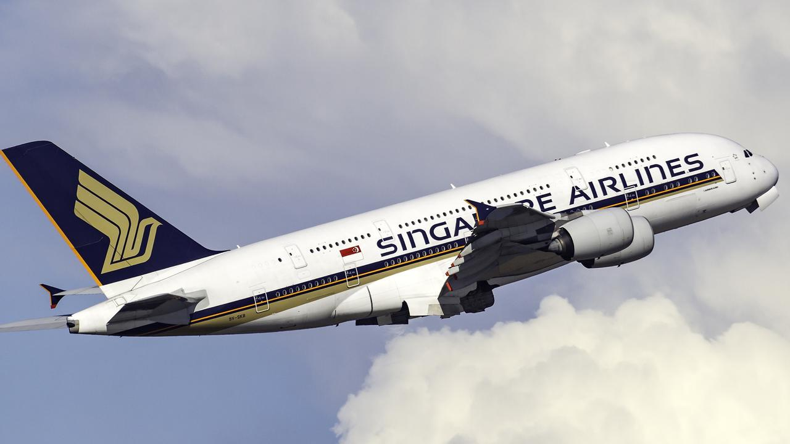

Авіакомпанії грають ключову роль у світовій торгівлі та туризмі, забезпечуючи пасажирські та вантажні перевезення по всьому світу. Вони забезпечують не лише швидкий та зручний спосіб подорожувати, але й створюють робочі місця та сприяють економічному зростанню країн. За допомогою авіакомпаній, люди можуть долати великі відстані та відкривати для себе нові країни та культури.
| Авіакомпанія | Пункти призначення | Тип польотів | |
|---|---|---|---|
| Внутрішні | Міжнародні | ||
| Emirates | 90 | 150 | Комерційні |
| Lufthansa | 60 | 100 | Вантажні |
| 80 | 130 | Комерційні | |
| Delta Air Lines | 100 | 140 | Комерційні |
| Qatar Airways | 70 | 120 | Вантажні |
| 95 | 155 | Комерційні | |
| Singapore Airlines | 85 | 145 | Комерційні |
З розвитком технологій та змінами у вимогах пасажирів, авіакомпанії шукають способи покращити свої послуги та зменшити вплив на довкілля. Майбутнє авіакомпаній полягає у впровадженні нових технологій для збільшення ефективності польотів, розвитку більш екологічно чистих палив та покращення комфорту для пасажирів. Постійні зміни та інновації в галузі авіаперевезень роблять подорожі ще більш безпечними та зручними для всіх.
Авіакомпанія Emirates, зі штаб-квартирою в Дубаї, Об'єднаних Арабських Еміратах, відома як один з провідних розкішних перевізників у світі, пропонує неперевершений комфорт та сервіс пасажирам по всьому світу. Заснована в 1985 році, Emirates швидко здобула популярність, ставши синонімом розкіші та вишуканості в авіаційній індустрії.
Зі своїм сучасним та просторим авіаційним парком, до якого входять іконічні літаки Airbus A380 і Boeing 777, Emirates забезпечує пасажирам винятковий досвід подорожей. Від розкішних апартаментів першого класу до елегантних кабін бізнес-класу та комфортних сидінь економ-класу, Emirates задовольняє різноманітні потреби своїх пасажирів, гарантуючи запам'ятований польот кожного разу.
Emirates відзначається своїм визнаним бортовим сервісом, який характеризується уважним кабінним екіпажем, смачною кулінарією та широким вибором варіантів розваг. Чи ви насолоджуєтеся гурманськими стравами, інспірованими світовими смаками, дивитеся останні блокбастери на особистих екранах або зв'язуєтеся з близькими за допомогою Wi-Fi на борту, пасажири отримують розкішний та безперешкодний досвід подорожей.
Поза винятковими бортовими зручностями Emirates пропонує обширну глобальну мережу, яка з'єднує пасажирів з понад 150 напрямками по всіх шести континентах. Чи ви відправляєтесь до шумних мегаполісів, екзотичних островів або культурних центрів, Emirates забезпечує, що пасажири дістануться до своїх бажаних напрямків зі стилем та комфортом.
Завдяки своєму зобов'язанню до інновацій та відмінності Emirates використовує екологічно ефективні літаки та впроваджує екологічно чисті практики для зменшення свого вуглецевого відбитку. Крім того, Emirates активно займається корпоративною соціальною відповідальністю, підтримуючи спільноти та ініціативи по всьому світу.
Завдяки своєму присвяченню задоволенню клієнтів та невтомній прагненню до відмінності Emirates заробила безліч нагород і відзнак протягом років, закріпивши свій статус глобального лідера у розкішній авіації. Чи подорожуєте ви у справах або для відпочинку, Emirates обіцяє подорож, що перевищує очікування, встановлюючи стандарти розкішної авіації.
Lufthansa, флагманський перевізник Німеччини, відомий своєю відмінністю в обслуговуванні, безпеці та ефективності. З багатою історією, що налічує з 1955 року, Lufthansa встановила себе як одну з провідних авіакомпаній у світі, пропонуючи пасажирам вищий рівень подорожі.
У серці успіху Lufthansa лежить його зобов'язання якості та інновацій. Від сучасного флоту літаків до світового класу послуг та сервісів, Lufthansa прагне перевершити очікування пасажирів на кожному кроці.
Флот Lufthansa складається з останніх літаків Airbus та Boeing, обладнаних передовою технологією та зручностями, спрямованими на поліпшення комфорту та безпеки пасажирів. Від іконічного Airbus A380 до економічного літака Boeing 787 Dreamliner, флот Lufthansa пропонує різноманітні опції, що відповідають потребам кожного пасажира.
Пасажири, які летять з Lufthansa, можуть очікувати світового класу розваг під час польоту, включаючи великий вибір фільмів, телешоу, музики та ігор. Крім того, гурманів чекає смачна кухня від нагороджених шеф-кухарів, супроводжувана вибором преміальних напоїв.
Прагнення до сталого розвитку та екологічної відповідальності - це важлива складова стратегії Lufthansa. Авіакомпанія інвестує в паливоекономічні літаки та сталий авіаційний паливо, щоб зменшити свій вуглецевий слід та сприяти більш стійкому майбутньому.
Мережа маршрутів Lufthansa охоплює шість континентів, з'єднуючи пасажирів з понад 220 напрямками по всьому світу. Зручні розклади та безперешкодні з'єднання роблять подорожі з Lufthansa легкими та комфортними для кожного пасажира.
Авіакомпанія Delta Air Lines зі штаб-квартирою в Атланті, Джорджії, є провідною глобальною авіакомпанією, відомою своєю відданістю безпеці, надійності та винятковому обслуговуванню пасажирів. Заснована в 1924 році, Delta стала однією з найбільших і найбільш поважаних авіакомпаній у світі, обслуговуючи мільйони пасажирів щорічно.
З різноманітним парком літаків, включаючи передові моделі Boeing та Airbus, Delta пропонує пасажирам комфортну та ефективну подорож. Від просторих кабін та ергономічних сидінь до передових систем розваг, Delta забезпечує пасажирів безперешкодний польот від відльоту до посадки.
Delta відома своєю невтомною відданістю комфорту та задоволенню пасажирів. Незалежно від того, летять вони в межах країни чи за її межами, пасажири можуть очікувати теплого прийому від уважного кабінного екіпажу Delta, а також широкого спектру послуг та зручностей, спрямованих на покращення їх подорожі.
Як лідер у сфері інновацій, Delta постійно інвестує в технології та інфраструктуру для покращення операційної ефективності та обслуговування клієнтів. Від передових платформ для бронювання та мобільних додатків до спрощених процедур реєстрації та обробки багажу, Delta використовує технології для зручності пасажирів та полегшення подорожі.
Поза своєю відданістю обслуговуванню пасажирів, Delta глибоко забурується в справу сталого розвитку та екологічного управління. Авіакомпанія активно працює над зменшенням свого вуглецевого сліду за допомогою палива ефективних літаків, ініціатив зі створення сталого авіаційного палива та програм зменшення відходів, демонструючи свою відданість збереженню планети для майбутніх поколінь.
Мережа маршрутів Delta охоплює шість континентів, з'єднуючи пасажирів з понад 300 напрямками по всьому світу. Незалежно від того, чи летять вони в справах чи для відпочинку, Delta пропонує широкий спектр варіантів польотів та зручних розкладів, щоб відповісти на потреби кожного пасажира.
Qatar Airways, національний перевізник Катару, відомий своїм першокласним обслуговуванням, розкішними зручностями та сучасним флотом. З моменту заснування у 1993 році Qatar Airways стрімко розвинувся і став однією з найпрестижніших авіакомпаній у світі, встановивши нові стандарти в галузі якості в авіаційній індустрії.
У центрі успіху Qatar Airways - постійне зобов'язання забезпечувати пасажирів першокласною подорожжю. Від моменту посадки пасажири зустрічаються з теплим гостинністю і неперевершеною обслуговуванням з боку уважного бортпровіду Qatar Airways.
Qatar Airways може похвалитися сучасним флотом літаків, який включає в себе флагманський Airbus A380 і Boeing 787 Dreamliner. Ці літаки обладнані передовою технологією та розкішними зручностями, що гарантує пасажирам комфортну та приємну подорож.
Однією з відмітних особливостей Qatar Airways є його нагороджена система розваг під час польоту, яка пропонує пасажирам широкий вибір фільмів, телешоу, музики та ігор. Крім того, пасажири можуть смакувати смачною кухнею від світових шеф-кухарів, супроводжуючи свій вибір преміальних напоїв.
Qatar Airways присвячується сталому розвитку та відповідальності перед довкіллям, постійно інвестуючи в паливоекономічні літаки та екологічно чисті практики, щоб зменшити вуглецевий слід та сприяти створенню більш стійкого майбутнього.
З широкою глобальною мережею, яка охоплює шість континентів, Qatar Airways з'єднує пасажирів з понад 160 напрямками по всьому світу. Незалежно від того, чи подорожуєте ви за бізнесом чи відпочиваєте, Qatar Airways забезпечує пасажирам безперервне з'єднання та неперевершений рівень розкіші, зробивши кожну подорож незабутньою.
Singapore Airlines, національний перевізник Сінгапуру, відомі своїм зобов'язанням до відмінності, винятковим обслуговуванням та розкішними подорожами. Засновані у 1947 році, Сінгапурські авіалінії перетворилися на одну з провідних авіакомпаній світу, постійно встановлюючи нові стандарти якості та інновацій.
У серці філософії Сінгапурських авіаліній - зобов'язання надавати пасажирам неперевершений комфорт, зручність та гостинність. Від реєстрації до приземлення пасажири насолоджуються уважним обслуговуванням та персоналізованою опікою, забезпечуючи безперервну та приємну подорож.
Сінгапурські авіалінії експлуатують сучасний флот літаків, обладнаний останніми технологіями та зручностями, що підвищують комфорт та безпеку пасажирів. Від знакового Airbus A380 до паливоекономних Boeing 787 Dreamliner, флот Сінгапурських авіаліній пропонує різноманітні опції для задоволення потреб кожного пасажира.
Пасажири, які подорожують Сінгапурськими авіалініями, можуть розраховувати на першокласні розважальні системи під час польоту, що пропонують широкий вибір фільмів, телешоу, музики та ігор для розваги. Крім того, гурманів чекає вишукана кухня від світових шеф-кухарів, супроводжувана вибором преміум-напоїв.
Зобов'язання до сталого розвитку та відповідальності перед довкіллям постійно спонукає Сінгапурські авіалінії до зменшення свого вуглецевого сліду та мінімізації впливу на навколишнє середовище. Авіакомпанія інвестує в паливоекономні літаки та впроваджує екологічно чисті практики, щоб сприяти зеленому майбутньому.
З широкою глобальною мережею, що охоплює шість континентів, Сінгапурські авіалінії з'єднують пасажирів з понад 130 напрямками по всьому світу, роблячи їх перевізником за бажанням для пасажирів, які шукають безперервне з'єднання та неперевершений рівень розкіші. Незалежно від того, чи подорожують вони за бізнесом чи відпочивають, Сінгапурські авіалінії забезпечують, що кожна подорож стає незабутньою.
